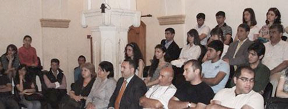

РАУФ РАДЖАБОВ ПРОТИВ ВСТУПЛЕНИЯ ГРУЗИИ В НАТО
Протокол Гражданского слушания
с участием представителей Азербайджана и Грузии
Баку
30.05.09
Истец: Рауф Раджабов
Ответчик: Ираклий Чихладзе
Председатель комиссии: Али Абасов
Члены комиссии: Владимир Папава, Рахман Бадалов, Нино Гоголошвили, Вагиф Ибрагимоглу,
Программу осуществляют: Альянс женщин за гражданское общество, Международная ассоциация женщин-инвалидов Грузии, Атлантический Клуб - Азербайджан
при поддержке Национального фонда демократии (NED)
с участием представителей Азербайджана и Грузии
Баку
30.05.09
Истец: Рауф Раджабов
Ответчик: Ираклий Чихладзе
Председатель комиссии: Али Абасов
Члены комиссии: Владимир Папава, Рахман Бадалов, Нино Гоголошвили, Вагиф Ибрагимоглу,
Программу осуществляют: Альянс женщин за гражданское общество, Международная ассоциация женщин-инвалидов Грузии, Атлантический Клуб - Азербайджан
при поддержке Национального фонда демократии (NED)
Рауф Раджабов: Главной акцией НАТО, за которой следит весь мир, стала операция в Афганистане. Фактически США и НАТО в этой стране пытаются помочь строительству более или менее стабильного государства - задача, которую многие считают невыполнимой, учитывая специфику афганской и региональной истории.
Кстати, США и Великобритания, которые перебросили в Афганистан наибольшее число военнослужащих, просят европейских союзников увеличить свое военное присутствие в стране и дислоцировать своих военных в регионах, где альянс противостоит талибам, прежде всего в южных провинциях. Европейские страны – члены НАТО не желают нести потери в живой силе. Генеральный секретарь НАТО призвал повысить численность контингентов европейских стран в Афганистане, чтобы избежать «американизации» войны после решения президента Барака Обамы об усилении военного присутствия США в этой стране. «Это не война президента Обамы, - заявил Яап де Хооп Схеффер журналистам в Брюсселе. - Союзники должны делать свою часть работы. Я бы не хотел, чтобы миссия была несбалансированной». «Меня не страшит и не тревожит американизация, но я предупреждаю, что в этом нет ничего хорошего ни для миссии, ни для НАТО», - заявил де Хооп Схеффер.
После юбилейного саммита НАТО уже можно говорить о начале работы над новой Стратегической концепцией - документом, который должен будет более четко определить, какие задачи НАТО намерена ставить перед собой в XXI веке. Работа над концепцией, возможно, продолжится год или два. Но уже можно говорить о некоторых стратегических контурах будущей конфигурации Североатлантического Альянса.
В газете «Речпосполита» было опубликовано интервью бывшего госсекретаря США Мадлен Олбрайт, ныне – советника президента Барака Обамы, где госпожа Олбрайт говорит: «В настоящее время НАТО пытается найти себя в 21-м веке. Европа была искусственно разделена после Второй мировой войны, и расширение НАТО служило стиранию этих неестественных границ. И сегодня нельзя позволить России вновь такие границы создать. Америка хочет сотрудничать с Россией, но есть области, в которых готова дать ей отпор». Иными словами, противник не мнимый, а вполне реальный определен – это Россия. Нет никаких сомнений в том, что США в лице администрации Буша видели в расширении НАТО как способ увеличить свою собственную сферу влияния, так и возможность сократить сферу влияния России.
По мнению Яап де Хооп Схеффера, самую серьезную угрозу будущему НАТО представляет сохраняющееся давление, направленное на расширение ее границ в восточном направлении. «Когда была распущена Организация Варшавского договора, возникло вполне понятное желание включить в состав НАТО новых членов, укрыв их защитным зонтиком. Кроме того, стандартным требованием было не привносить в НАТО сохраняющиеся споры и междоусобицы. Главное внимание Североатлантический Альянс уделял (и должен уделять впредь) укреплению стабильности государств, входящих в его состав и находящихся на его границах, но не активизации споров и усилению нестабильности» - заявил генсек НАТО. По мнению прагматиков, НАТО как Альянс должна воспользоваться свежими взглядами Барака Обамы и снова подумать о том, что именно членам Альянса следует ожидать от этой организации.
ПЕРСПЕКТИВА РАСШИРЕНИЯ
Получение статуса контактного государства Румынией свидетельствует о наличии у НАТО на 2009-2010 годы дипломатических планов в отношении Азербайджана. В них особое место занимает формирование общественного мнения. В НАТО считают, что в этом вопросе на Румынию возлагается большая ответственность. Перспектива расширения НАТО включает в себя три важных момента: 1. Готовность той или иной страны к вступлению в НАТО. 2. Достижение консенсуса по данной стране. 3. Формирование общественного мнения в стране, желающей вступить в НАТО. Таким образом, в настоящее время НАТО готовится к большому расширению. Многие в Брюсселе хотели бы видеть в этом процессе Азербайджан, Армению и Грузию. По этой причине НАТО заинтересована в формировании в предстоящие два года общественного мнения Азербайджана в свою пользу. В этом направлении Альянс намерен в соответствии с практикой общественной дипломатии предпринять некоторые шаги. Это расширение связей с НПО, СМИ, деятелями науки и отдельными представителями общественности. Цель - найти пути избавления азербайджанского общества от старых стереотипов.
Об этом говорилось неоднократно и на весьма высоком уровне. К примеру, такие заявления звучали из уст известнейшего политолога и дипломата Збигнева Бжезинского, а также первых лиц и руководителей НАТО, того же генсекретаря Яапа де Хооп Схеффера. То есть они постоянно заявляют о том, что НАТО будет расширяться, и что это как бы заложено в самой структуре и системе Североатлантического Альянса. Безусловно, подтверждением таких намерений служит и то, что НАТО уже продвинулась вплоть до Центральной Азии и Афганистана, и сегодня уже встали вопросы об участии Азербайджана в воздушном коридоре для поставок вооружений и личного состава блока до Афганистана. Смещается центр военного присутствия НАТО далее на восток. Безусловно, итогом прагматического подхода руководства альянса к этим реалиям служит все большее желание и намерение подключить страны Южного Кавказа к НАТО уже не в качестве партнера и союзника, а как полноценных участников. Тут, конечно, много попутных проблем. Например, в прошлом году на апрельском саммите НАТО в Бухаресте Грузии, и Украине не предоставили Плана действий по членству (ПДЧ), и что последовало затем в августе в Грузии известно всем. Германия и Франция не желают ссориться с Москвой и стремятся возобновить диалога с Кремлем. О возвращении в НАТО Франции после почти полувекового перерыва может означать конец дискуссии о вступлении в НАТО Украины и Грузии, ведь Париж неоднократно заявлял о своей радикально иной позиции в этом отношении, а также продвигал идею независимой европейской оборонной политики. Саркози очень верно заявил в Мюнхене в в перой декаде 2009 года, что вступление в семью демократических наций не есть какое-то изначальное право; чтобы тебя приняли в эту семью наций, это надо заслужить. В марте текущего года представительная группа видных государственных деятелей США обратились к президенту Обаме с рекомендацией повременить с вопросом о предоставлении Украине и Грузии ПДЧ в НАТО. Это уже говорит о том, что этот процесс никак не входит в стратегию США. И если допустить, что Барак Обама останется и на второй срок, это означает, что в ближайшие 8 лет ни Украина, ни Грузия не станут полноправными членами НАТО. Хотя если бы в прошлом апреле Грузии был бы предоставлен статус страны с ПДЧ, то вряд ли бы ситуация развивалась таким образом, как это получилось затем в августе 2008 года. Однако Мадлен Олбрайт в интервью «Газете выборчей» заявила о готовности принятия в ряды членов НАТО Грузии и Украины, подчеркнув при этом, что эти страны должны помнить, что НАТО - не подарок, а повышенная ответственность.
С другой стороны, сам Альянс испытывает большие проблемы с решением вопроса Афганистана. Ведь на сегодня не все страны-члены и партнеры согласны участвовать в прямых боевых действиях в этой стране. И гипотетически можно поставить вопрос - а не стремится ли сейчас НАТО к расширению как раз для того, чтобы обеспечить более массовое военное присутствие в Афганистане за счет Вооруженных сил (ВС) новых стран-членов? Чтобы они участвовали в боевых действиях. Вот что говорит по этому поводу один из членов британского правительства, много лет отвечавший за связи с Афганистаном; его зовут Ким Хауэлз, он уже покинул этот пост. Так вот, недавно он заявил: «британский народ никогда не согласится с тем, что Британия должна и дальше рисковать жизнями своих сыновей и дочерей, отправляя их воевать с религиозными фанатиками, коррумпированными боевиками и героиновыми бандами в течение следующих тридцати лет. Думать, что она согласится на это, просто глупо». В 1952 году НАТО принял в свои ряды Турцию, а ЕС никак не может или не хочет принять Стамбул в семейство европейских стран. Почему?
Не надо забывать также и о том, что любой военно-политический блок на каком-то этапе своего существования носит в себе зерно и столкновения с другим таким же союзом. К примеру, ОДКБ или ШОС. Это нельзя сбрасывать со счетов. То есть я предполагаю, что борьба на этом фронте еще впереди.
Однако я не думаю, что НАТО удастся круто изменить отношение народных масс к себе в Азербайджане в течение ближайших двух лет. Особенно с учетом развивающегося сейчас мирового финансового кризиса, усиливающихся боевых действий в Афганистане. И насколько точно, что азербайджанское население, с учетом имеющихся 20 тысяч шехидов в карабахской войне, решит, что нам нужно нести еще и другие потери? Вопрос - во имя чего? Поэтому пропаганда здесь вряд ли что изменит. Кроме того, надо не забывать о том, что недавно ряд стран Европы уже конкретно поставил вопрос о формировании Европейских вооруженных сил. Это уже начали делать Франция, Германия и Великобритания. Причем вне НАТО, параллельно.
Таким образом, Азербайджан, Армения и меньше Грузия уже сейчас, видя такое, могут задуматься - а зачем нам торопиться с членством в НАТО, если уже есть какие-то другие подспудные движения? То есть сейчас этот вопрос выглядит уже совершенно иначе, чем даже полгода тому назад. Мир меняется, причем очень динамично. И думать старыми клише сейчас очень опасно. За последние годы конфигурация систем безопасности, в региональном и глобальном масштабе изменилась. Если раньше все это шло в направлении выстраивания однополярного мира, то сейчас наблюдается развитие многополярного мира, который заявляет о своих национальных, региональных и глобальных приоритетах. Это не могло не сказаться и на взаимоотношениях Азербайджана и НАТО. Сегодня уже не стоит вопрос о вхождении в НАТО. И со стороны Азербайджана нет выстраивания такого взаимоотношения. Было уже заявлено, что все эти программы никак не обусловлены вхождением Азербайджана в НАТО.
С другой стороны, и НАТО не готово к тому, чтобы Азербайджан присоединился к Североатлантическому альянсу. НАТО уже не раздает «пригласительные» билеты в свой клуб налево и направо. Убежден, что до того, как будет принято решение о вступлении в НАТО, Азербайджан должен инициировать кардинальные реформы ВС, чтобы республика получила ВС, так сказать, нового образца. К сожалению, на сегодняшний день такие фундаментальные реформы не инициированы. Помимо этого за все эти годы не было популяризации НАТО как структуры, которая решает не только военные задачи. Если взять вот эту составляющую, то граждане Азербайджана воспринимают НАТО как военную структуру, которая воюет, к примеру, в Афганистане, где гибнут солдаты, проливается кровь, и так далее. НАТО ассоциируется именно с войной. А для страны, которая имеет в наличии конфликт, потеряла десятки тысяч своих граждан, это также накладывает свой отпечаток. Так, по словам помощника генсека НАТО по общественной дипломатии Жан Франсис Бюро, большая часть населения Азербайджана не информирована о деятельности НАТО, и Альянс планирует уделять внимание вопросам распространения верной информации и активизации информационной работы.
Азербайджану следует вне зависимости от пожеланий и мнений других стран развивать свою стратегию – усиливать национальную и региональную безопасность и качество жизни своих граждан. Сверхдержавы договорятся между собой, распределят сферы своих интересов и постараются сделать все возможное для того, чтобы избежать глобального конфликта. Никто не пойдет на начало третьей мировой войны во имя того, чтобы та или иная страна стала членом НАТО. Поэтому Азербайджан и страны региона ради минимизации угроз и вызовов и для усиления безопасности своих граждан должны выстраивать свою стратегию, четкую и грамотную в этом динамично меняющемся мире. Поэтому я прихожу к выводу, что статус нейтральной страны, как для Азербайджана, так и для Южного Кавказа должен стать приоритетным.
Но это не означает того, что страны Южного Кавказа не должны иметь взаимовыгодных отношений с НАТО. Отнюдь нет. «Связь Азербайджана с НАТО усиливает безопасность страны, а также ее приверженность к демократическим ценностям и поддержке процессов военной модернизации и реформирования», – сказала посол США в Азербайджане Энн Дерси. Дерси отметила, что, выполняя План индивидуального партнерства с НАТО, Азербайджан взял на себя обязательства по модернизации своих Вооружённых сил (ВС) и структур национальной безопасности. «Эти реформы помогут ВС Азербайджана интегрироваться в различные операции, проводимые НАТО, быть ответственными перед гражданскими и политическими силами, играющими важнейшую роль в основании демократических государств», – подчеркнула дипломат. Прямым примером прогресса Азербайджана в этой области Дерси назвала разработку Концепции национальной безопасности и работу правительства по Военной доктрине. «Очень важно, что гражданское общество, я имею в виду граждан, играют активную роль в обсуждении этих доктрин и их роли в будущем Азербайджана», – продолжила посол, отметив, что политика безопасности относится не только к специалистам, но и ко всему обществу.
Генеральный секретарь НАТО Яап де Хооп Схеффер дал высокую оценку отношениям между Альянсом и Арменией. Выступая с докладом на тему «НАТО в 2020-ом году: гарантия нашей будущей безопасности» в рамках открывшегося 3 апреля в Страсбурге саммита НАТО, он заявил, что сотрудничество с Ереваном строится в рамках программы «Партнерство во имя мира». Отвечая на вопрос о перспективах урегулирования нагорно-карабахского конфликта, он отметил, что НАТО в этом вопросе не должно играть решающую роль. «Наша организация не занимается этим вопросом. Нагорно-карабахский конфликт решается в рамках Минской группы ОБСЕ. Я и сам, будучи министром иностранных дел, в пору моего председательства в ОБСЕ интересовался решением этого конфликта», - сказал Схеффер.
Конец доклада.
ИРАКЛИЙ ЧИХЛАДЗЕ В ЗАЩИТУ ВСТУПЛЕНИЯ ГРУЗИИ В НАТО
Основным и единственным ярым противником вступления Грузии в НАТО является Россия. В Москве не скрывают, что не собираются отказываться от рычагов давления на постсоветские страны и прилагают все усилия для того, чтобы усилить контроль над странами СНГ. Любая попытка сближения какой-либо из стран СНГ с западными структурами воспринимается Москвой как личная обида.
Поэтому не могу согласиться с мнением уважаемого господина Раджабова, что в НАТО определен «противник не мнимый, а вполне реальный - Россия», так как США в лице администрации Буша видели в расширении НАТО как способ увеличить свою собственную зону влияния, так и возможность сократить сферу влияния России.
Конечно, определенное политическое, идеологическое и экономическое противостояние между странами Запада и Россией имеет место быть. Но следует учитывать, что как США, так и крупные государства Европы зачастую являются стратегическими партнерами России в различных международных проектах.
Если в России администрацию Джорджа Буша критиковали за «агрессивность», то «либеральная» администрация Барака Обамы продолжает стратегию по расширению НАТО. Привлекательность членства в НАТО для стран Европы в свете новых геополитических реалий доказывается как минимум восстановлением полноценного членства в Альянсе Франции, которая вышла из военной структуры НАТО в 1966 году. Насколько Париж поддался желанию США расширить свою сферу влияния? Наверное, все-таки, западные страны осознают, что обеспечение эффективной безопасности в сегодняшнем мире возможно лишь через сотрудничество и кооперацию. Что касается сокращения влияния России, то, скорее всего это Москва пытается очертить четкие рамки зон «своего» и «чужого» влияния. Августовская война с Грузией, «газовая война» с Украиной, ускоренное создание КСОР ОДКБ, шантаж НАТО по поводу проводимых в Грузии в мае 2009 года учений в рамках программы «Партнерство ради мира» - эти шаги Москвы явно говорят о желании закрепить свое влияние на постсоветском пространстве, и их никак нельзя назвать направленными на укрепление безопасности. Напротив, Москва в достижении своих целей использует лишь методы силового давления. В то же время по инициативе Запада в 2002 году был учрежден совет НАТО-Россия для развития отношений между Альянсом и Россией. Таким образом, если Запад пытается найти общий язык с Москвой путем диалога, то Москва часто говорит на языке ультиматумов.
Господин Раджабов считает, что возвращение Франции в НАТО означает конец дискуссии о вступлении в Альянс Украины и Грузии. Он приводит цитату президента Франции о том, что «вступление в семью демократических наций не есть какое-то изначальное право; чтобы тебя приняли в эту семью наций, это надо заслужить».
Мне кажется, что невозможно рассматривать «возвращение в семью НАТО Франции» как конец дискуссии о вступлении в НАТО Украины и Грузии. Заявление президента Николя Саркози о том, что «право вступления в семью демократических наций надо заслужить» - абсолютно верно. Именно потому Грузии необходимо будет провести и завершить ряд важных реформ с тем, чтобы заслужить это право. И перспектива вступления Грузии в НАТО, а в дальнейшем и в ЕС, должна будет подтолкнуть власти Грузии к проведению демократических реформ в стране. Можно отметить, что на брюссельском саммите НАТО в марте этого года министр ИД Франции Бернар Кушнер наряду с другими, проголосовал за приостановление работы совета НАТО-Россия и за выработку жесткой позиции в отношении России.
По мнению истца, представительная группа видных государственных деятелей США обратились к президенту Обаме с рекомендацией повременить с вопросом о предоставлении Украине и Грузии ПДЧ в НАТО, что говорит о том, что этот процесс никак не входит в стратегию США.
Вопрос предоставления Грузии ПДЧ на этом этапе не представляется важным. Более важным является продолжающаяся разноплановая интеграция Грузии в различные структуры Альянса. Можно отметить, что, невзирая на шантаж и откровенные угрозы со стороны России, в Грузии все-таки проводятся учения в рамках программы НАТО «Партнерство во имя мира». И, во-вторых, грузинские подразделения примут участие в миротворческих операциях под эгидой НАТО в Афганистане.
26 марта этого года, выступая в немецком парламенте, канцлер Германии Ангела Меркель заявила о том, что Украина и Грузия «сохраняют перспективу вступления» в НАТО. Если вспомнить, что в декабре 2008 года на министерской встрече НАТО было принято решение не предоставлять Грузии и Украине ПДЧ, но было решено осуществлять целевые программы НАТО-Украина и НАТО-Грузия, то не исключено, что вступление Грузии в НАТО может произойти и без предоставления ПДЧ.
Также можно отметить, что 15 сентября 2008 года Североатлантический совет провел учредительное заседание Комиссии НАТО-Грузия (КНГ) после решения, принятого на встрече министров иностранных дел стран НАТО 19 августа. КНГ представляет собой важную дополнительную структуру для сотрудничества между НАТО и Грузией. Основные цели КНГ – углубление политического диалога между НАТО и Грузией и контроль процесса, начатого на встрече в верхах в Бухаресте в связи со стремлениями Грузии к членству в организации. КНГ также имеет целью углубить сотрудничество между НАТО и Грузией в области реформ в Грузии и координировать содействие, оказываемое Североатлантическим союзом Грузии в восстановлении после конфликта с Россией.
Господин Раджабов не исключает возможности столкновения НАТО в будущем с другим подобным военно-политическим союзом, приводя в пример ОДКБ или ШОС.
Наиболее разнонаправленным сотрудничество НАТО со страной не членом Альянса было именно с Россией, после того, как в 2002 году был создан совет НАТО-Россия. При этом Москва всячески выступа против аналогичного сотрудничества НАТО с другими странами постсоветского пространства, в первую очередь, с Украиной и Грузией. Отношения НАТО и России значительно охладели после августовской войны. Мне представляется малореальным какое-либо столкновение между блоками НАТО и ШОС или ОДКБ. Ни одна из стран ОДКБ и ШОС не признала независимость Абхазии и Южной Осетии, несмотря на давление Кремля. В самих этих организациях уже давно проявляются внутренние противоречия между разными их членами. Так, Узбекистан практически игнорирует основные мероприятия, проводимые в рамках обеих организаций; президент Таджикистана Эмомали Рахмон принял решение о приезде на саммит ОДКБ в феврале 2009 года в самый последний момент, министры иностранных дел, обороны и секретарь Совета безопасности Таджикистана не поставили свои подписи под проектом о создании КСОР. В начале этого года власти Беларуси фактически отказались участвовать в военных операциях в рамках КСОР ОДКБ за пределами своей страны. И подобных противоречий можно назвать еще много. Поэтому мне представляется, что объединения наподобие ШОС, ОДКБ носят всего лишь временный характер и скреплены лишь желанием, финансами и давлением Кремля. Потому, скорее всего, они разделят будущее СНГ, который уже начал свой необратимый распад.
Истец апеллирует к мировому финансовому кризису, усиливающимся боевым действиям в Афганистане, к вопросу о создании странами Европы Европейских вооруженных сил, параллельных силам НАТО…
Население Грузии выразило свое отношение к вступлению страны в НАТО на референдуме в 2008 году, когда за него проголосовало около 80%. Вступление в НАТО – это не только обеспечение военной безопасности и гарантия от иностранной агрессии, но и гарантия крупным инвесторам. Потому в условиях всемирного финансового кризиса интеграция в НАТО станет дополнительной и эффективной мерой борьбы с последствиями кризиса. Я не буду говорить об Азербайджане, но известно, что наиболее боеспособными в Грузии являются именно те подразделения, которые прошли НАТО-вскую подготовку и принимали участие в миротворческих операциях в Ираке. Что касается создания европейских параллельных военных структур, то опять-таки, их создают страны-члены НАТО. И данные структуры, как правильно заметил господин Раджабов, являются параллельными, но не альтернативными и не заменяют структур НАТО. Кроме того, создание Европейских вооруженных сил еще раз подтверждает мысль о безальтернативности коллективной безопасности.
Северо-Атлантический Альянс (НАТО) является не только военным блоком, но, в первую очередь, олицетворяет собой систему западных ценностей, к которым стремится Грузия.
О целях и задачах членства в НАТО сказано в Вашингтонском договоре (на основе которого и создавалось НАТО), в котором говорится о возможности коллективно «защищать свободу, общее наследие и цивилизацию своих народов, основанные на принципах демократии, свободы личности и законности».
В Стратегической концепция НАТО, опубликованной в 1999 году, определены первостепенные задачи Альянса:
- Выступать основой стабильности в Евроатлантическом регионе;
- Служить форумом для проведения консультаций по проблемам безопасности;
- Осуществлять сдерживание и защиту от любой угрозы агрессии против любого из государств-членов НАТО;
- Способствовать эффективному предотвращению конфликтов и активно участвовать в кризисном регулировании;
- Содействовать развитию всестороннего партнерства, сотрудничества и диалога с другими странами Евроатлантического региона.
Таким образом, главной целью НАТО является обеспечение гарантий свободы и безопасности всех стран-участников в соответствии с принципами Устава ООН. Для достижения этих целей НАТО использует свое политическое влияние и военный потенциал в соответствии с характером вызовов безопасности.
Пожалуй, одним из главных плюсов вступления Грузии в НАТО можно назвать предоставление гарантий безопасности. Вступление Грузии в НАТО будет означать максимальное снижение риска возобновления войны против Грузии. В мае этого года российский премьер-министр Путин уже заявил, что отношения Россия-НАТО могут ухудшиться, если НАТО не пересмотрит своего отношения к Грузии. Пожалуй, эти слова президента де факто России говорят лишь о желании Кремля установить свой полный контроль над Грузией, может быть, и через вооруженную агрессию и оккупацию. В Кремле прекрасно понимают, что чем больше Грузия интегрируется в Северо-Атлантические структуры, тем меньше шансов у него вернуть Тбилиси в орбиту своего влияния. Вступление же Грузии в НАТО навсегда заставит российское руководство забыть о такой перспективе. Кроме того, в Москве понимают, что демократические изменения и реформы, которые должна будет осуществить Грузия, чтобы стать членом НАТО, сделает ее привлекательной для Абхазии и Южной Осетии.
Таким образом, вступление в НАТО для Грузии будет означать усиление ее политической и экономической независимости.
Вступление Грузии в НАТО автоматически будет означать конец политическому, военному, экономическому давлению на Грузию со стороны России. Нельзя исключить обострения отношений России со странами-членами НАТО и, особенно с США в случае вступления Грузии в НАТО, но Россия будет вынуждена рано или поздно наладить нормальные партнерские отношения с Грузией, как это произошло на примере Польши, Чехии, Венгрии, против вступления в НАТО которых также активно выступал Кремль. Не стоит забывать, что большинство стран Западной Европы – членов НАТО также являются стратегическими партнерами России. Поэтому сопротивление Москвы какой-либо интеграции, а тем более вступлению Грузии в НАТО объясняется лишь нежеланием потерять надежду вернуть Грузию в зону своего влияния.
Вступление в НАТО является и гарантией увеличения западных инвестиций в страну. Поскольку безопасность страны во многом основывается на безопасности экономики и экономической независимости страны, страны НАТО стимулируют инвестиции в новых странах-членах Альянса. Так, в Венгрию, Польшу, Чехию, Румынию после вступления в НАТО резко увеличились западные инвестиции. То есть, и для крупных инвесторов факт членства в НАТО является серьезным стимулом защиты и безопасности их инвестиций. В качестве обратного примера можно вспомнить, что после августовской российско-грузинской войны западные инвесторы в массовом порядке начали выводить средства не только из Грузии, которая подверглась агрессии, и из экономики страны-агрессора – России. То есть, любые риски, в том числе и внешние, отпугивают потенциальных инвесторов. Членство в НАТО является для инвесторов прочной гарантией того, что их финансы не будут подвержены внешним и внутренним негативным факторам и, как следствие, улучшится инвестиционный климат страны.
Политические, экономические, военные реформы, которые обязана будет провести Грузия в случае реальной перспективы вступления в НАТО будут способствовать и более тесной интеграции (а в будущем и возможному вступлению) Грузии в Евросоюз.
Противником вступления новых стран в Альянс всегда активно выступала Россия, мотивируя свое отрицательное к этому отношение соображениями собственной безопасности.
Очень часто российские политики и некоторые представители грузинских политических партий заявляли о недопустимости вступления Грузии в НАТО, о необходимости реализации идеи нейтралитета Грузии. Однако можно вспомнить, что в 1920 году Москва подписала договор о нейтралитете Грузии и уже в 1921 году осуществила оккупацию Грузии. В сегодняшних условиях нейтралитет Грузии может в очередной раз стать концом ее независимости.
Другим фактором возможного обострения ситуации в случае вступления Грузии в НАТО российские политики называют негативную реакцию Ирана. Стоит отметить, что 1) Грузия не граничит с этой страной; 2) Сосед Ирана – Турция является членом Альянса, что не явилось дополнительным дестабилизирующим фактором.
Что касается страхов Москвы относительно размещения военных баз НАТО на территории Грузии, то следует отметить, что Альянс не требует их размещения в Грузии в качестве одного из обязательных условий для вступления. При этом Москва, выступая против какого-либо военного сотрудничества НАТО с Грузией, сама размещает военные базы на территории Абхазии и Южной Осетии.
Интеграция Грузии в НАТО будет означать интенсивное развитие страны, привлечение инвестиций, сближение с Евросоюзом. В случае, если Кремль откажется от авторитарных методов управления, использования силовых рычагов давления на своих соседей, экономического шантажа и займется обустройством России, то от этого Россия только выиграет. Привлекательность России станет именно той силой, которая будет притягивать к ней другие страны. К сожалению, Москва сегодня пытается восстановить могущество СССР, считая, что цель оправдывает любые средства.
Конец доклада.
Поэтому не могу согласиться с мнением уважаемого господина Раджабова, что в НАТО определен «противник не мнимый, а вполне реальный - Россия», так как США в лице администрации Буша видели в расширении НАТО как способ увеличить свою собственную зону влияния, так и возможность сократить сферу влияния России.
Конечно, определенное политическое, идеологическое и экономическое противостояние между странами Запада и Россией имеет место быть. Но следует учитывать, что как США, так и крупные государства Европы зачастую являются стратегическими партнерами России в различных международных проектах.
Если в России администрацию Джорджа Буша критиковали за «агрессивность», то «либеральная» администрация Барака Обамы продолжает стратегию по расширению НАТО. Привлекательность членства в НАТО для стран Европы в свете новых геополитических реалий доказывается как минимум восстановлением полноценного членства в Альянсе Франции, которая вышла из военной структуры НАТО в 1966 году. Насколько Париж поддался желанию США расширить свою сферу влияния? Наверное, все-таки, западные страны осознают, что обеспечение эффективной безопасности в сегодняшнем мире возможно лишь через сотрудничество и кооперацию. Что касается сокращения влияния России, то, скорее всего это Москва пытается очертить четкие рамки зон «своего» и «чужого» влияния. Августовская война с Грузией, «газовая война» с Украиной, ускоренное создание КСОР ОДКБ, шантаж НАТО по поводу проводимых в Грузии в мае 2009 года учений в рамках программы «Партнерство ради мира» - эти шаги Москвы явно говорят о желании закрепить свое влияние на постсоветском пространстве, и их никак нельзя назвать направленными на укрепление безопасности. Напротив, Москва в достижении своих целей использует лишь методы силового давления. В то же время по инициативе Запада в 2002 году был учрежден совет НАТО-Россия для развития отношений между Альянсом и Россией. Таким образом, если Запад пытается найти общий язык с Москвой путем диалога, то Москва часто говорит на языке ультиматумов.
Господин Раджабов считает, что возвращение Франции в НАТО означает конец дискуссии о вступлении в Альянс Украины и Грузии. Он приводит цитату президента Франции о том, что «вступление в семью демократических наций не есть какое-то изначальное право; чтобы тебя приняли в эту семью наций, это надо заслужить».
Мне кажется, что невозможно рассматривать «возвращение в семью НАТО Франции» как конец дискуссии о вступлении в НАТО Украины и Грузии. Заявление президента Николя Саркози о том, что «право вступления в семью демократических наций надо заслужить» - абсолютно верно. Именно потому Грузии необходимо будет провести и завершить ряд важных реформ с тем, чтобы заслужить это право. И перспектива вступления Грузии в НАТО, а в дальнейшем и в ЕС, должна будет подтолкнуть власти Грузии к проведению демократических реформ в стране. Можно отметить, что на брюссельском саммите НАТО в марте этого года министр ИД Франции Бернар Кушнер наряду с другими, проголосовал за приостановление работы совета НАТО-Россия и за выработку жесткой позиции в отношении России.
По мнению истца, представительная группа видных государственных деятелей США обратились к президенту Обаме с рекомендацией повременить с вопросом о предоставлении Украине и Грузии ПДЧ в НАТО, что говорит о том, что этот процесс никак не входит в стратегию США.
Вопрос предоставления Грузии ПДЧ на этом этапе не представляется важным. Более важным является продолжающаяся разноплановая интеграция Грузии в различные структуры Альянса. Можно отметить, что, невзирая на шантаж и откровенные угрозы со стороны России, в Грузии все-таки проводятся учения в рамках программы НАТО «Партнерство во имя мира». И, во-вторых, грузинские подразделения примут участие в миротворческих операциях под эгидой НАТО в Афганистане.
26 марта этого года, выступая в немецком парламенте, канцлер Германии Ангела Меркель заявила о том, что Украина и Грузия «сохраняют перспективу вступления» в НАТО. Если вспомнить, что в декабре 2008 года на министерской встрече НАТО было принято решение не предоставлять Грузии и Украине ПДЧ, но было решено осуществлять целевые программы НАТО-Украина и НАТО-Грузия, то не исключено, что вступление Грузии в НАТО может произойти и без предоставления ПДЧ.
Также можно отметить, что 15 сентября 2008 года Североатлантический совет провел учредительное заседание Комиссии НАТО-Грузия (КНГ) после решения, принятого на встрече министров иностранных дел стран НАТО 19 августа. КНГ представляет собой важную дополнительную структуру для сотрудничества между НАТО и Грузией. Основные цели КНГ – углубление политического диалога между НАТО и Грузией и контроль процесса, начатого на встрече в верхах в Бухаресте в связи со стремлениями Грузии к членству в организации. КНГ также имеет целью углубить сотрудничество между НАТО и Грузией в области реформ в Грузии и координировать содействие, оказываемое Североатлантическим союзом Грузии в восстановлении после конфликта с Россией.
Господин Раджабов не исключает возможности столкновения НАТО в будущем с другим подобным военно-политическим союзом, приводя в пример ОДКБ или ШОС.
Наиболее разнонаправленным сотрудничество НАТО со страной не членом Альянса было именно с Россией, после того, как в 2002 году был создан совет НАТО-Россия. При этом Москва всячески выступа против аналогичного сотрудничества НАТО с другими странами постсоветского пространства, в первую очередь, с Украиной и Грузией. Отношения НАТО и России значительно охладели после августовской войны. Мне представляется малореальным какое-либо столкновение между блоками НАТО и ШОС или ОДКБ. Ни одна из стран ОДКБ и ШОС не признала независимость Абхазии и Южной Осетии, несмотря на давление Кремля. В самих этих организациях уже давно проявляются внутренние противоречия между разными их членами. Так, Узбекистан практически игнорирует основные мероприятия, проводимые в рамках обеих организаций; президент Таджикистана Эмомали Рахмон принял решение о приезде на саммит ОДКБ в феврале 2009 года в самый последний момент, министры иностранных дел, обороны и секретарь Совета безопасности Таджикистана не поставили свои подписи под проектом о создании КСОР. В начале этого года власти Беларуси фактически отказались участвовать в военных операциях в рамках КСОР ОДКБ за пределами своей страны. И подобных противоречий можно назвать еще много. Поэтому мне представляется, что объединения наподобие ШОС, ОДКБ носят всего лишь временный характер и скреплены лишь желанием, финансами и давлением Кремля. Потому, скорее всего, они разделят будущее СНГ, который уже начал свой необратимый распад.
Истец апеллирует к мировому финансовому кризису, усиливающимся боевым действиям в Афганистане, к вопросу о создании странами Европы Европейских вооруженных сил, параллельных силам НАТО…
Население Грузии выразило свое отношение к вступлению страны в НАТО на референдуме в 2008 году, когда за него проголосовало около 80%. Вступление в НАТО – это не только обеспечение военной безопасности и гарантия от иностранной агрессии, но и гарантия крупным инвесторам. Потому в условиях всемирного финансового кризиса интеграция в НАТО станет дополнительной и эффективной мерой борьбы с последствиями кризиса. Я не буду говорить об Азербайджане, но известно, что наиболее боеспособными в Грузии являются именно те подразделения, которые прошли НАТО-вскую подготовку и принимали участие в миротворческих операциях в Ираке. Что касается создания европейских параллельных военных структур, то опять-таки, их создают страны-члены НАТО. И данные структуры, как правильно заметил господин Раджабов, являются параллельными, но не альтернативными и не заменяют структур НАТО. Кроме того, создание Европейских вооруженных сил еще раз подтверждает мысль о безальтернативности коллективной безопасности.
ЦЕЛИ И ЗАДАЧИ НАТО
Северо-Атлантический Альянс (НАТО) является не только военным блоком, но, в первую очередь, олицетворяет собой систему западных ценностей, к которым стремится Грузия.
О целях и задачах членства в НАТО сказано в Вашингтонском договоре (на основе которого и создавалось НАТО), в котором говорится о возможности коллективно «защищать свободу, общее наследие и цивилизацию своих народов, основанные на принципах демократии, свободы личности и законности».
В Стратегической концепция НАТО, опубликованной в 1999 году, определены первостепенные задачи Альянса:
- Выступать основой стабильности в Евроатлантическом регионе;
- Служить форумом для проведения консультаций по проблемам безопасности;
- Осуществлять сдерживание и защиту от любой угрозы агрессии против любого из государств-членов НАТО;
- Способствовать эффективному предотвращению конфликтов и активно участвовать в кризисном регулировании;
- Содействовать развитию всестороннего партнерства, сотрудничества и диалога с другими странами Евроатлантического региона.
Таким образом, главной целью НАТО является обеспечение гарантий свободы и безопасности всех стран-участников в соответствии с принципами Устава ООН. Для достижения этих целей НАТО использует свое политическое влияние и военный потенциал в соответствии с характером вызовов безопасности.
ПЛЮСЫ ЧЛЕНСТВА В НАТО
Пожалуй, одним из главных плюсов вступления Грузии в НАТО можно назвать предоставление гарантий безопасности. Вступление Грузии в НАТО будет означать максимальное снижение риска возобновления войны против Грузии. В мае этого года российский премьер-министр Путин уже заявил, что отношения Россия-НАТО могут ухудшиться, если НАТО не пересмотрит своего отношения к Грузии. Пожалуй, эти слова президента де факто России говорят лишь о желании Кремля установить свой полный контроль над Грузией, может быть, и через вооруженную агрессию и оккупацию. В Кремле прекрасно понимают, что чем больше Грузия интегрируется в Северо-Атлантические структуры, тем меньше шансов у него вернуть Тбилиси в орбиту своего влияния. Вступление же Грузии в НАТО навсегда заставит российское руководство забыть о такой перспективе. Кроме того, в Москве понимают, что демократические изменения и реформы, которые должна будет осуществить Грузия, чтобы стать членом НАТО, сделает ее привлекательной для Абхазии и Южной Осетии.
Таким образом, вступление в НАТО для Грузии будет означать усиление ее политической и экономической независимости.
Вступление Грузии в НАТО автоматически будет означать конец политическому, военному, экономическому давлению на Грузию со стороны России. Нельзя исключить обострения отношений России со странами-членами НАТО и, особенно с США в случае вступления Грузии в НАТО, но Россия будет вынуждена рано или поздно наладить нормальные партнерские отношения с Грузией, как это произошло на примере Польши, Чехии, Венгрии, против вступления в НАТО которых также активно выступал Кремль. Не стоит забывать, что большинство стран Западной Европы – членов НАТО также являются стратегическими партнерами России. Поэтому сопротивление Москвы какой-либо интеграции, а тем более вступлению Грузии в НАТО объясняется лишь нежеланием потерять надежду вернуть Грузию в зону своего влияния.
Вступление в НАТО является и гарантией увеличения западных инвестиций в страну. Поскольку безопасность страны во многом основывается на безопасности экономики и экономической независимости страны, страны НАТО стимулируют инвестиции в новых странах-членах Альянса. Так, в Венгрию, Польшу, Чехию, Румынию после вступления в НАТО резко увеличились западные инвестиции. То есть, и для крупных инвесторов факт членства в НАТО является серьезным стимулом защиты и безопасности их инвестиций. В качестве обратного примера можно вспомнить, что после августовской российско-грузинской войны западные инвесторы в массовом порядке начали выводить средства не только из Грузии, которая подверглась агрессии, и из экономики страны-агрессора – России. То есть, любые риски, в том числе и внешние, отпугивают потенциальных инвесторов. Членство в НАТО является для инвесторов прочной гарантией того, что их финансы не будут подвержены внешним и внутренним негативным факторам и, как следствие, улучшится инвестиционный климат страны.
Политические, экономические, военные реформы, которые обязана будет провести Грузия в случае реальной перспективы вступления в НАТО будут способствовать и более тесной интеграции (а в будущем и возможному вступлению) Грузии в Евросоюз.
А МОСКВА ПРОТИВ…
Противником вступления новых стран в Альянс всегда активно выступала Россия, мотивируя свое отрицательное к этому отношение соображениями собственной безопасности.
Очень часто российские политики и некоторые представители грузинских политических партий заявляли о недопустимости вступления Грузии в НАТО, о необходимости реализации идеи нейтралитета Грузии. Однако можно вспомнить, что в 1920 году Москва подписала договор о нейтралитете Грузии и уже в 1921 году осуществила оккупацию Грузии. В сегодняшних условиях нейтралитет Грузии может в очередной раз стать концом ее независимости.
Другим фактором возможного обострения ситуации в случае вступления Грузии в НАТО российские политики называют негативную реакцию Ирана. Стоит отметить, что 1) Грузия не граничит с этой страной; 2) Сосед Ирана – Турция является членом Альянса, что не явилось дополнительным дестабилизирующим фактором.
Что касается страхов Москвы относительно размещения военных баз НАТО на территории Грузии, то следует отметить, что Альянс не требует их размещения в Грузии в качестве одного из обязательных условий для вступления. При этом Москва, выступая против какого-либо военного сотрудничества НАТО с Грузией, сама размещает военные базы на территории Абхазии и Южной Осетии.
Интеграция Грузии в НАТО будет означать интенсивное развитие страны, привлечение инвестиций, сближение с Евросоюзом. В случае, если Кремль откажется от авторитарных методов управления, использования силовых рычагов давления на своих соседей, экономического шантажа и займется обустройством России, то от этого Россия только выиграет. Привлекательность России станет именно той силой, которая будет притягивать к ней другие страны. К сожалению, Москва сегодня пытается восстановить могущество СССР, считая, что цель оправдывает любые средства.
Конец доклада.